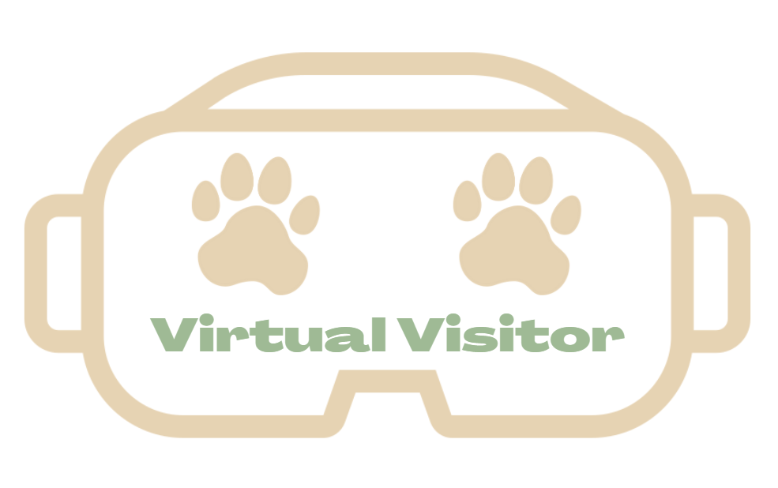
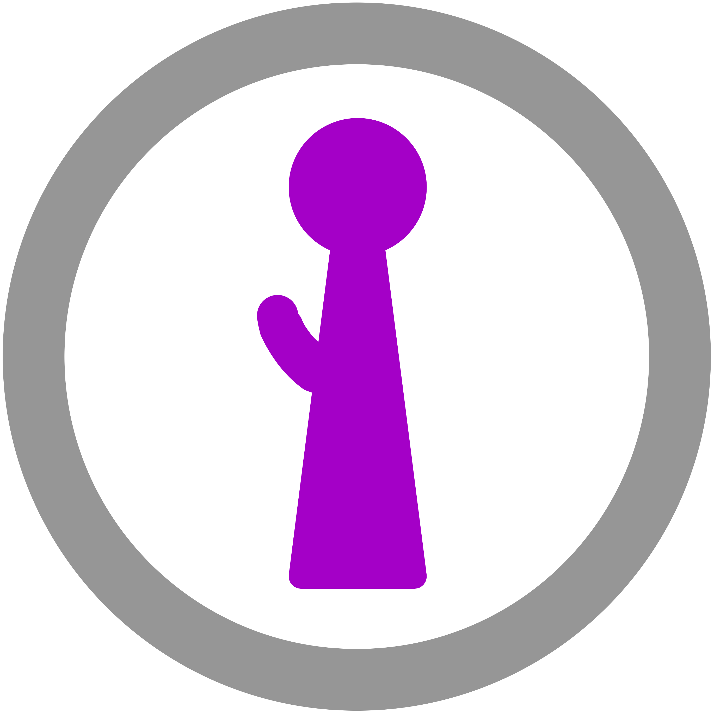
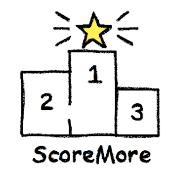

Project Theme
In the last year, various crises at the local, national, and global levels have laid bare the many inequities that different groups in our society currently face. Thus, this offering’s project theme will be “reducing disparities”, where this can be broadly construed to relate to helping groups of people gain access to information, resources, support, connections, communities, opportunities, etc. that other groups may more easily access for various reasons.
Your team’s goal is to choose and then design for a group of people that currently face a disparity in access of some kind. Your team must pick a user group that you all do not consider yourself a member of; this is so that you will not rely too much on your own experiences during user research. Over the course of the quarter, your team will work on designing a system to help this group of people gain the kind of access that other groups may already have.
You should identify and consider goals and activities that are important to people. The domain could involve disparities regarding healthcare, education, money, food, fitness, technology and digital services, government and local services, social activities, mental health, safety, clothing, shelter, jobs, mentorship, and the list goes on! Activities within these domains could include reducing barriers that people currently face, directly providing access to information or resources, connecting people to other people who have those resources, forming a community among people to help each other or engage in collective action, or highlighting the disparity to people who have the ability to change it.
Here are examples of prior projects from similar courses with target groups and ideas that would be relevant under this theme:
- A service for connecting people without direct access to technology, such as senior living communities and homeless populations (in your case, you would pick just one of these groups), with librarians to provide them with library resources: https://www.uwdesignshow.com/projects/seattle-public-library-app-outreach-system
- A system to support truck drivers who lack access to their families, friends, and sense of home to stay better connected with loved ones: https://courses.cs.washington.edu/courses/cse440/19sp/projects/cabin/
- A resource for students without access to sexual education courses to be able to ask questions and access resources and learning materials regarding sex education: https://courses.cs.washington.edu/courses/cse440/19wi/assets/projects/seek/
- A tool for gig-economy drivers that have difficulty accessing amenities while working to be able to connect with local businesses to use their facilities: https://web.stanford.edu/class/cs147/projects/OnlineLocalCommunity/coral/
- A system for domestic abuse victims who lack power and information due to their abuser to be able to learn about and fight back against device spying: https://courses.cs.washington.edu/courses/cse440/20wi/projects/guardia/
- A system for hospital patients with mobility impairments to be able to independently move around in the hospital via the use of an autonomous wheelchair: https://www.youtube.com/watch?v=bL0-mn9tKhQ
- An app for Korean immigrants who do not speak English proficiently access contextually-relevant common English phrases and information for conversing in the U.S.: https://courses.cs.washington.edu/courses/cse440/17sp/projects/Iyagi_Seattle/
As part of your project, you will need to define what a specific group’s needs are that your project can help support, and what activity you would like to design to help address this need. While your design may not be able to address this head on, it may be useful to consider the conditions that allowed this disparity in question to arise while conducting user research and learning from your target group. Think about how the activity you chose is currently supported via technology (or not), what doesn’t work about current ways of supporting it, and how your solution will do this better. Finally, be specific in the group you select! The specificity of addressing a particular group of people allows you to deeply think about what makes the group unique and how you would best want to support them. So, dive in and see what you can come up with!
Projects
Helping Chinese Immigrants Get Ahead(set) In the Hospital
Contributors: Eric Chan, Linda Do, Mayki Hu, George Zhang
Virtual Visitor: A New and COVID Friendly Way to Meet Your Future Furry Friend
Contributors: Patrick Render, Joonyoung Chong (Joon), Lizzie Gossman, Yanjie Niu
Sextension: Working Towards A Safer Online Sex Community
Contributors: Juan Martinez, Milla Zuniga, Yuxiao Shi, Autumn Liu
A universe of experiences at your fingertips
Contributors: Mariam Mayanja, Scott Swartz, Angkana Rattanasouk, Ryan Tannenberg
Be Free from Your Food Allergies: A tool to help people with food allergies find enjoyable restaurants
Contributors:Nathan Chia, Victor Kuan, Leo Tsai, Sherry Yang
HearAtHome: Affordable sound recognition at home for Deaf and Hard of hearing parents.
Contributors: Mallory Johnson, Maurice Montag, Jacob van’t Hoog, Khoa Nguyen
AiBuddy: Helping Students Never Stop Learning
Contributors: Phillip Tran, Nicoletta Gilbertson, Ray Fung, Alex McGregor
Finding Home in the Grocery Store
Contributors: Daphne Hsu, Shreya Jayaraman, Ryan Liang, and Kris Wong
Learn, Find, and Connect: Making sure our communities have enough to eat with Grocer-Ease
Contributors: Linda Vong, Abby Ellis, David Zarate, Danica Villez
Localize: Helping Small Businesses Recapture the Market
Contributors: Claudia Coulibaly, David Lee, Ethan Pyke, Larry Shan
Puncturing Paywalls: Alleviating disparities in club sport involvement for low-income youth
Contributors: Shayan Nathan, Fadel Shtiui, Libby Knell
Breaking the Cycle of Poverty
Contributors: Joely Swartz, Amber Xu, Danh Luong
EduBound: Improving the College Application and Transition Process for First-Generation Students
Contributors: Elana Hummel, Ethan Sylvia, Hank Tadeusiak
Helping Seniors Living Alone

Contributors: Paari Gopal, Wednesday Wolf, Marlena Rehder, Morgan Graham
Nursing Mental Health: Care for those who Care
Contributors: Alex Fu, Sophia Hwang, Anne Pham, Chris Yuen
It’s a Better Way to Move to America
Contributors: Akif Ahmed, Isabelle Donsbach, Truc Nguyen, Ken Aragon
Locallyours: Bringing small plates to a big stage
Contributors: Richard Jiang, Sabrina Pearson, Yuji Lai, Jimmy Nguyen